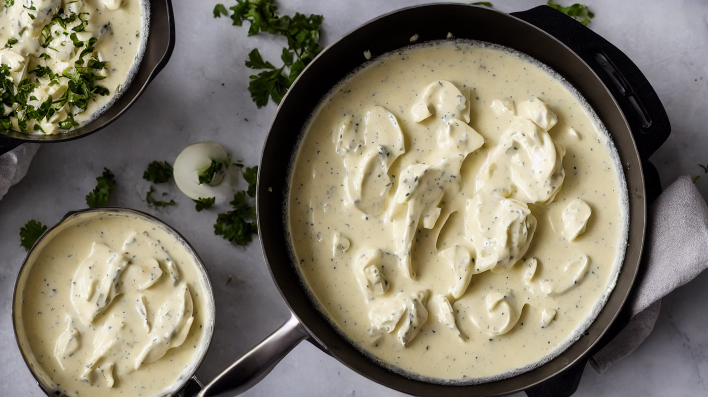
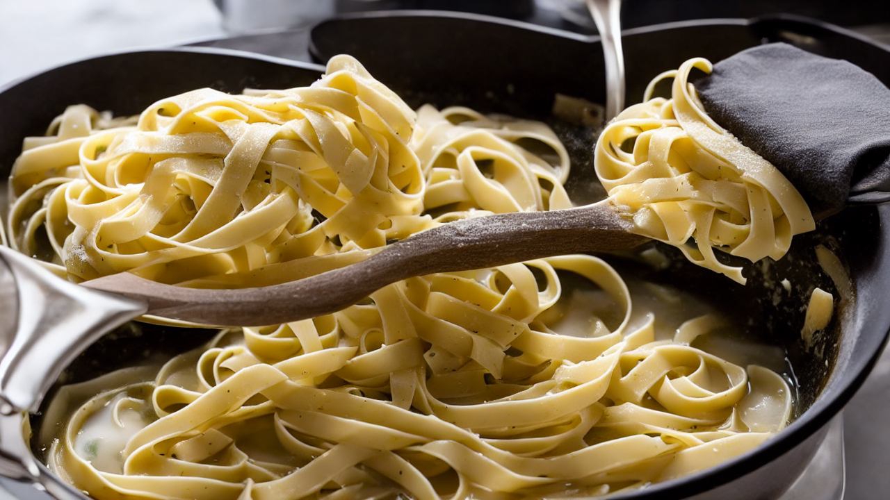
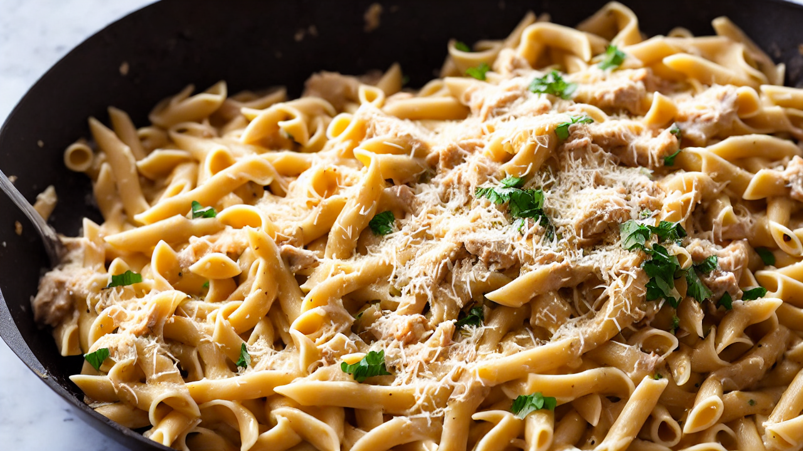
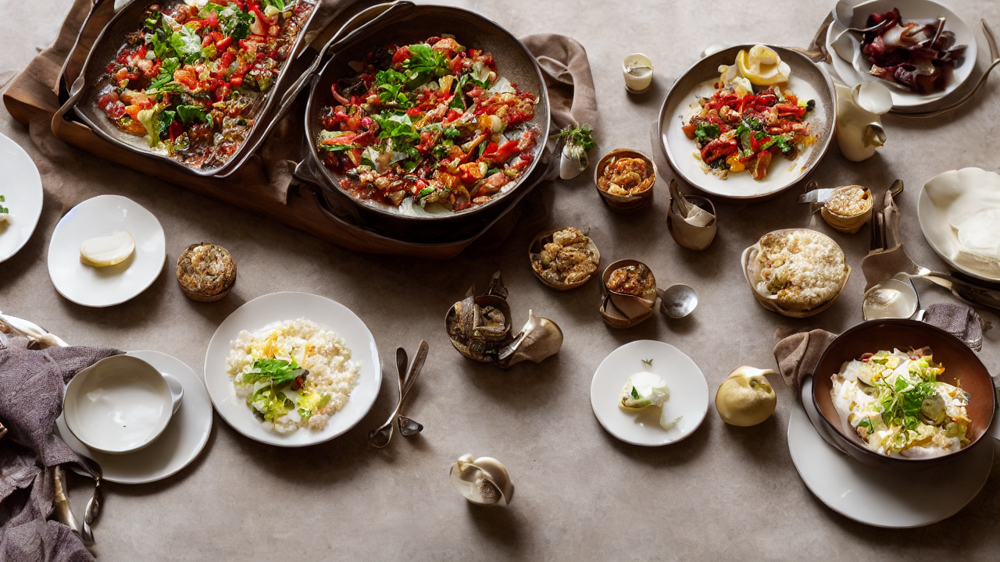

One Pot Chicken Alfredo | Creamy Comfort Food in Minutes!
Craving a comforting and delicious meal? This One Pot Chicken Alfredo is the answer! It's incredibly easy to make, ready in under 30 minutes, and perfect for busy weeknights. Get ready for a creamy, cheesy pasta dish that the whole family will love – a perfect addition to your pasta night rotation!
Ingredients
- our ingredients! You'll need 1 pound of boneless
- skinless chicken breasts
- 1 pound of fettuccine pasta
- 4 cups of chicken broth
- 1/2 cup heavy cream
- 1/2 cup grated Parmesan cheese
- 4 tablespoons butter
- 2 cloves garlic minced
- salt and pepper to taste
- Don't forget a pinch of nutmeg for extra flavor!
Instructions

Are you tired of spending hours in the kitchen after a long day? Get ready to ditch the multiple pots and pans because today we're making a ridiculously easy and creamy One Pot Chicken Alfredo! This is comfort food simplified, and trust me, it’s unbelievably delicious.
Let’s gather our ingredients! You'll need 1 pound of boneless, skinless chicken breasts, 1 pound of fettuccine pasta, 4 cups of chicken broth, 1/2 cup heavy cream, 1/2 cup grated Parmesan cheese, 4 tablespoons butter, 2 cloves garlic minced, and salt and pepper to taste. Don't forget a pinch of nutmeg for extra flavor!
First, let’s get our chicken cooking! Add the chicken breasts to a large pot with the chicken broth and bring to a boil. Once boiling, reduce heat to medium and simmer for about 12-15 minutes, or until the chicken is cooked through.

Now for the pasta! Once the chicken is cooked, remove it from the pot and shred it with two forks. Then, add the fettuccine pasta directly to the same pot with the chicken broth. Bring back to a boil and cook for 8-10 minutes, stirring frequently, until the pasta is al dente.
Time for the creamy goodness! Reduce the heat to low and stir in the butter, minced garlic, and heavy cream. Let it simmer for another 2-3 minutes, allowing the sauce to thicken slightly.

Next, add the shredded chicken back to the pot. Stir in the grated Parmesan cheese and continue stirring until the cheese is melted and the sauce is smooth and creamy. Season with salt, pepper, and a pinch of nutmeg to taste.
Give everything a final stir and check the seasoning. If the sauce is too thick, add a splash more chicken broth. If it's too thin, simmer for a minute or two longer. Remember, a perfectly balanced sauce is key!
Now for the best part – plating! Serve the One Pot Chicken Alfredo immediately, garnished with a sprinkle of fresh parsley and an extra grating of Parmesan cheese. A side of garlic bread or a simple salad would be the perfect complement.

And there you have it – a delicious and satisfying One Pot Chicken Alfredo in under 30 minutes! For a richer flavor, try using a blend of Parmesan and Romano cheese. Don't forget to like and subscribe for more easy and delicious recipes!
Recommended Kitchen Essentials
Every great recipe starts with great tools. Here are our top picks to make cooking easier and more enjoyable:
Support Quick Bites Kitchen — When you purchase through our links, we may earn a small commission at no extra cost to you. This helps us keep creating free recipes for everyone. Thank you!